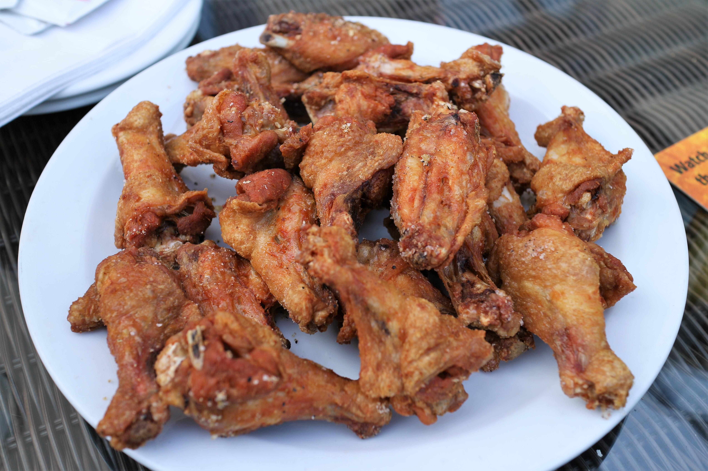

Baked chicken wings with a Parmesan/garlic sauce.
Nothing beats Some good crispy chicken wings. They are easy to make and finger licking good.
First we have to make a flour mixture with the following ingredients.
Next we will have to dry our chicken wings with paper towels.
After the chicken wings are dried off, we will cover them in our flour mixture. Make sure to cover chicken wings completely.
While the chicken is baking in the oven we can prepare our P armesan/garlic sauce.
melt 1/3 cup of butter and add the following ingredients.
Pre-heat the oven to 425 F and bake the chicken wings for 20 minutes and then flip them.
Bake them for another 15 minutes. Then put some Parmesan/garlic sauce on the wings.
Continue baking until the wings look golden brown and crispy.
Enjoy your chicken wings!